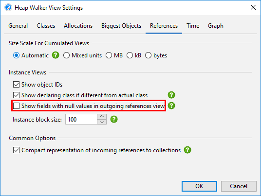

Heap snapshots
Any heap analysis that involves references between objects requires a heap snapshot, because it is not possible to ask the JVM what the incoming references to an object are - you have to iterate over the entire heap to answer that question. From that heap snapshot, JProfiler creates an internal database that is optimized for producing the data required for serving the views in the heap walker.
There are two sources of heap snapshots: JProfiler heap snapshots and HPROF/PHD heap snapshots. JProfiler heap snapshots support all available features in the heap walker. The profiling agent uses the profiling interface JVMTI to iterate over all references. If the profiled JVM is running on a different machine, all information is transferred to the local machine and further calculations are performed there. HPROF/PHD snapshots are created with a built-in mechanism in the JVM and are written to disk in a standard format that JProfiler can read. HPROF snapshots are provided by HotSpot JVMs and PHD snapshots are produced by Eclipse OpenJ9 JVMs.
On the overview page of the heap walker, you can choose if a JProfiler heap snapshot or an HPROF/PHD heap snapshot should be created. By default, the JProfiler heap snapshot is recommended. The HPROF/PHD heap snapshot is useful in special situations that are discussed in another chapter.
Selection steps
The heap walker consists of several views that show different aspects of a selected set of objects. Right after you take the heap snapshot, you are looking at all objects on the heap. Each view has navigation actions for turning some selected objects into the current object set. The header area of the heap walker shows information on how many objects are contained in the current object set.

Initially, you are looking at the "Classes" view which is similar to the "All objects" view in the live memory section. By selecting a class and invoking Use->Selected Instances, you create a new object set that only contains instances of that class. In the heap walker, "using" always means creating a new object set.
For the new object set, showing the classes view of the heap walker would not be interesting, because it would effectively just filter the table to the previously selected class. Instead, JProfiler suggests another view with the "New object set" dialog. You can cancel this dialog to discard the new object set and return to the previous view. The outgoing references view is suggested, but you could also choose another view. This is just for the initially displayed view, you can switch views in the view selector of the heap walker afterwards.
The header area now tells you that there are two selection steps and includes links for calculating the retained and deep sizes or for using all objects that are retained by the current object set. The latter would add another selection step and suggest the classes view because there would likely be multiple classes in that object set.
In the lower part of the heap walker, the selection steps up to this point are listed. Clicking on the hyperlinks will take you back to any selection step. The first data set can also be reached with the Go To Start button in the tool bar. The back and forward buttons in the tool bar are useful if you need to backtrack in your analysis.
Classes view
The view selector at the top of the heap walker contains five views that show different information for the current object set. The first one of those is the "Classes" view.
The classes view is similar to the "All objects" view in the live memory section and has an aggregation level chooser that can group classes into packages. In addition, it can show estimated retained sizes for classes. This is the amount of memory that would be freed if all instances of a class were removed from the heap. If you click on the Calculate estimated retained sizes hyperlink, a new Retained Size column is added. The displayed retained sizes are estimated lower bounds, calculating the exact numbers would be too slow. If you really need an exact number, select the class or package of interest and use the Calculate retained and deep sizes hyperlink in the header of the new object set.
Based on your selection of one or more classes or packages, you can select the instances themselves, the
associated java.lang.Class objects, or all retained objects. Double-clicking is the
quickest selection mode and uses the selected instances. If multiple selection modes are available, as in
this case, a Use drop-down menu is shown above the view.
When solving class loader-related problems, you often have to group instances by their class loader. The Inspections tab offers a "Group by class loaders" inspection that is made available on the classes view, because it is especially important in that context. If you execute that analysis, a grouping table at the top shows all class loaders. Selecting a class loader filters the data accordingly in the view below. The grouping table remains in place when you switch to the other views of the heap walker until you perform another selection step. Then, the class loader selection becomes part of that selection step.
Allocation recording views
The information where objects have been allocated can be important when narrowing down suspects for a memory leak or when trying to reduce memory consumption. For JProfiler heap snapshots, the "Allocations" view shows the allocation call tree and the allocation hot spots for those objects where allocations have been recorded. Other objects are grouped in the "unrecorded objects" node in the allocation call tree. For HPROF/PHD snapshots, this view is not available.
Like in the classes view, you can select multiple nodes and use the Use Selected button at the top to create a new selection step. In the "Allocation hot spots" view mode, you can also select nodes in the back traces. This will only select objects in the associated top-level hot spot that have been allocated on a call stack that ends with the selected back trace.
Another piece of information that JProfiler can save when recording allocations is the time when an object was allocated. The "Time" view in the heap walker shows a histogram of the allocation times for all recorded instances in the current object set. You can click and drag to select one or multiple intervals and then create a new object set with the Use Selected button.
For a more precise selection of a time interval, you can specify a range of bookmarks. All objects between the first and last selected bookmark will then be marked.
In addition to the time view, allocation times are displayed as a separate column in the reference views. However, allocation time recording is not enabled by default. You can switch it on directly in the time view or edit the setting in Advanced Settings -> Memory Profiling in the session settings dialog.
Biggest objects view
The biggest objects view shows a list of the most important objects in in the current object set. "Biggest" in this context means the objects that would free most memory if they were removed from the heap. That size is called the retained size. In contrast, the deep size is the total size of all objects that are reachable through strong references.
Each object can be expanded to show outgoing references to other objects that are retained by this object. In this way, you can recursively expand the tree of retained objects that would be garbage collected if one of the ancestors were to be removed. This kind of tree is called a "dominator tree". The information displayed for each object in this tree is similar to the outgoing reference view except that only dominating references are displayed.
Not all dominated objects are directly referenced by their dominators. For example, consider the references in the following figure:
Object A dominates objects B1 and B2 and it does not have a direct reference to object C. Both B1 and B2 reference C. Neither B1 nor B2 dominates C, but A does. In this case, B1, B2 and C are listed as direct children of A in the dominator tree, and C will not be listed a child of B1 and B2. For B1 and B2, the field names in A by which they are held are displayed. For C, "[transitive reference]" is displayed on the reference node.
At the left side of each reference node in the dominator tree, a size bar shows what percentage of the retained size of the top-level object is still retained by the target object. The numbers will decrease as you drill down further into the tree. In the view settings, you can change the percentage base to the total heap size.
The dominator tree has a built-in cutoff that eliminates all objects that have a retained size that is lower than 0.5% of the retained size of the parent object. This is to avoid excessively long lists of small dominated objects that distract from the important objects. If such a cutoff occurs, a special "cutoff" child node will be shown that notifies you about the number of objects that are not shown on this level, their total retained size and the maximum retained size of the single objects.
Instead of showing single objects, the dominator tree can also group biggest objects into classes. The grouping drop-down at the top of the view contains a check box that activates this display mode. In addition, you can add a class loader grouping at the top level. The class loader grouping is applied after the biggest objects are calculated and shows who loaded the classes of the biggest objects. If you want to analyze the biggest objects for one particular class loader instead, you can use the "Group by class loader" inspection first.
The view mode selector above the biggest objects view allows you to switch to an alternate visualization: A tree map that shows all dominated objects as a set of nested rectangles.
In the tree map, each rectangle represents a dominated object with an area proportional to its retained size. In contrast to the tree, the tree map gives you a flattened perspective of all leafs in the dominator tree. If you are mostly interested in big arrays, you can use the tree map in order to find them quickly without having to dig into the branches of the tree. Also, the tree map gives you an overall impression of the relative importance of dominated objects and the object size distribution on the heap.
At the bottom right of the tree map you can see the total percentage of the entire heap that is represented by the tree map. If you have not zoomed in, the remaining part of the heap is dominated by objects that have not made it into the list of biggest objects due to the internal threshold for retained sizes.
Reference views
Unlike the previous views, the reference views are only available if you have performed at least one selection step. For the initial object set these views are not useful, because the incoming and outgoing reference views show all individual objects and the merged reference views can only be interpreted for a focused set of objects.
The outgoing references view is similar to the view that a debugger would show in an IDE. When opening an object,
you can see the primitive data and references to other objects. Any reference type can be selected as a new
object set and you can select multiple objects at once. Like in the classes view, you can select retained objects
or associated java.lang.Class objects. If the selected object is a standard collection, you can
also select all contained elements with a single action. For class loader objects, there is an option to select
all loaded instances.
Fields with null references are not shown by default because that information may be distracting for a memory analysis. If you want to see all fields for debugging purposes, you can change this behavior in the view settings.

Beside the simple selection of displayed instances, the outgoing references view has powerful filtering capabilities. For live sessions, both outgoing and incoming reference views have advanced manipulation and display functionality that is discussed in the same chapter.
The incoming references view is the main tool for solving memory leaks. To find out why an object is not garbage collected, the Show Paths To GC Root button will find reference chains to garbage collector roots. The chapter on memory leaks has detailed information on this important topic.
Merged references
Checking references for a lot of different objects can be tedious, so JProfiler can show you the merged outgoing and incoming references of all objects in the current object set. By default, the references are aggregated by classes. If instances of a class are referenced by other instances of the same class, a special node is inserted that shows the original instances plus the instances from these class-recursive references. This mechanism automatically collapses internal reference chains in common data structures, such as in a linked list.
You can also choose to show the merged references grouped by field. In that case, each node is a reference type, such as a particular field of a class or the content of an array. For standard collections, internal reference chains that would break cumulation are compacted, so you see reference types like "map value of java.lang.HashMap". Unlike for class aggregation, this mechanism only works for explicitly supported collections from the standard library of the JRE.
In the "Merged outgoing references" view, the instance counts refer to the referenced objects. In the "Merged incoming references" view, you see two instance counts on each row. The first instance count shows how many instances in the current object set are referenced along this path. The bar icon at the left side of the node visualizes this fraction. The second instance count after the arrow icon refers to the objects that hold the references to the parent node. When performing a selection step, you can choose whether you want to select objects from the current object set that are referenced in the selected way or if you are interested in the objects with the selected reference - the reference holders.
With the "Merged dominating references" view you can find out which references must be removed so that some or all of the objects in the current object set can be garbage collected. The dominating reference tree can be interpreted as the merged inverse of the dominator tree in the biggest objects view, aggregated for classes. The reference arrows may not express a direct reference between the two classes, but there may be other classes in between that hold non-dominating references. In the case of multiple garbage collector roots, no dominating references may exist for some or all objects in the current object set.

By default, the "Merged dominating references" view shows incoming dominating references and by opening the tree, you can reach the objects that are held by the GC roots. Sometimes, the reference tree may lead to the same root objects along many different paths. By choosing the "GC roots to objects" view mode in the drop down at the top of the view, you can see the reverse perspective where the roots are at the top level and the objects in the current object set are in the leaf nodes. In that case, the references go from the top level towards the leaf nodes. Which perspective is better depends on whether the references you want to eliminate are close to the current object set or close to the GC roots.
Inspections
The "Inspections" view does not show data by itself. It presents a number of heap analyses that create new object sets according to rules that are not available in the other views. For example, you may want to see all objects that are retained by a thread local. This would be impossible to do in the reference views. Inspections are grouped into several categories and explained in their descriptions.
An inspection can partition the calculated object set into groups. Groups are shown in a table at the top of
the heap walker. For example, the "Duplicate strings" inspection shows the duplicate string values as groups.
If you are in the reference view, you can then see the java.lang.String instances with the
selected string value below. Initially, the first row in the group table is selected. By changing the selection,
you change the current object set. The Instance Count and Size columns of the group table tell
you how large the current object set will be when you select a row.
The group selection is not a separate selection step in the heap walker, but it becomes part of the selection step made by the inspection. You can see the group selection in the selection step pane at the bottom. When you change the group selection, the selection step pane is updated immediately.
Each inspection that creates groups decides which groups are most important in the context of the inspection. Because this does not always correspond to the natural sort order of one of the other columns, the Priority column in the group table contains a numeric value that enforces the sort order for the inspection.
Inspections can be expensive to calculate for large heaps, so the results are cached. In this way, you can go back in the history and look at the results of previously calculated inspections without waiting.
Heap walker graph
The most realistic representation of instances together with their references is a graph. While the graph has a low visual density and is impractical for some types of analyses, it still is the best way to visualize relationships between objects. For example, circular references are difficult to interpret in a tree, but immediately evident in a graph. Also, it may be beneficial to see incoming and outgoing references together, which is impossible in a tree structure where you can see either one or the other.
The heap walker graph does not automatically show any objects from the current object set, nor is it cleared when you change the current object set. You manually add selected objects to the graph from the outgoing references view, the incoming references view or the biggest objects view by selecting one or more instances and using the Show In Graph action.
Package names in the graph are shortened by default. Like in the CPU call graph, you can enable the full display in the view settings. References are painted as arrows. If you move the mouse over the reference, a tooltip window will be displayed that shows details for the particular reference. Instances that were manually added from the reference views have a blue background. The more recently an instance has been added, the darker the background color. Garbage collector roots have a red background and classes have a yellow background.
By default, the reference graph only shows the direct incoming and outgoing references of the current instance. You can expand the graph by double clicking on any object. This will expand either the direct incoming or the direct outgoing references for that object, depending on the direction you're moving in. With the expansion controls on the left and right sides of an instance you can selectively open incoming and outgoing references. If you need to backtrack, use the undo functionality to restore previous states of the graph, so you don't get distracted by too many nodes. To trim the graph, there are actions for removing all unconnected nodes or even for removing all objects.
Like in the incoming references view, the graph has a Show Path To GC Root button that will expand one or more reference chains to a garbage collector root if available. In addition, there is a Find Path Between Two Selected Nodes action that is active if two instances are selected. It can search for directed and undirected paths and optionally also along weak references. If a suitable path is found, it is shown in red.
Initial object set
When you take a heap snapshot, you can specify options that control the initial object set. If you have recorded allocations, the Select recorded objects check box restricts the initially displayed objects to those that have been recorded. The numbers will usually differ from those in the live memory views, because unreferenced objects are removed by the heap walker. Unrecorded objects are still present in the heap snapshot, they are just not displayed in the initial object set. With further selection steps you can reach unrecorded objects.
In addition, the heap walker performs a garbage collection and removes weakly referenced objects, except for soft references. This is usually desirable because weakly referenced objects are distracting when looking for memory leaks where only strongly referenced objects are relevant. However, in those cases where you are interested in weakly referenced objects you can tell the heap walker to retain them. The four weak reference types in the JVM are "soft", "weak", "phantom" and "finalizer" and you can chose which of them should be sufficient for retaining an object in the heap snapshot.
If present, weakly referenced objects can be selected or removed from the current object set by using the "Weak reference" inspections in the heap walker.
Marking the heap
Often you want to look at the objects that have been allocated for a particular use case. While you could do this by starting and stopping allocation recording around that use case, there is a much better way that has a lot less overhead and preserves the allocation recording feature for other purposes: The Mark Heap action that is advertised on the heap walker overview and that is also available in the Profiling menu or as a trigger action marks all objects on the heap as "old". When you take the next heap snapshot, it is now clear what the "new" objects should be.
If there was a previous heap snapshot or a mark heap invocation, the title area of the heap walker shows the new instance count and two links titled Use new and Use old that allow you to select either the instances that have been allocated since that point in time, or the surviving instances that were allocated before. This information is available for each object set, so you can drill down first and select new or old instances later on.